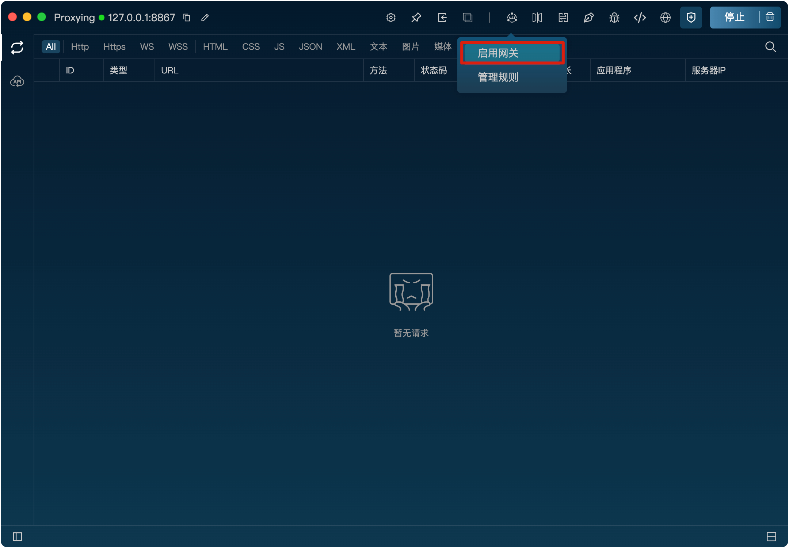
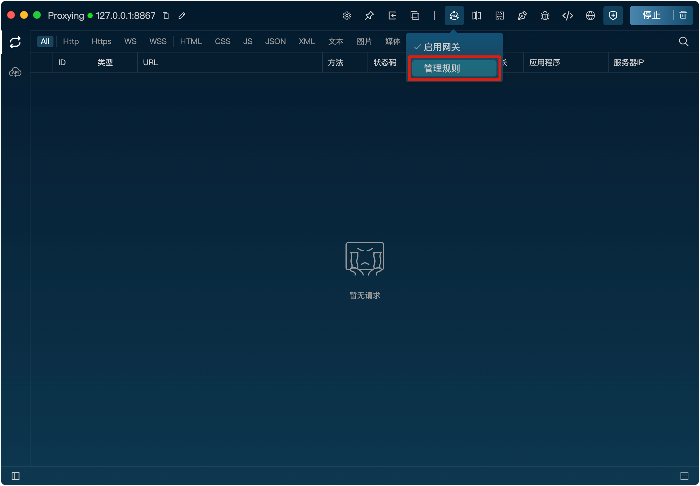
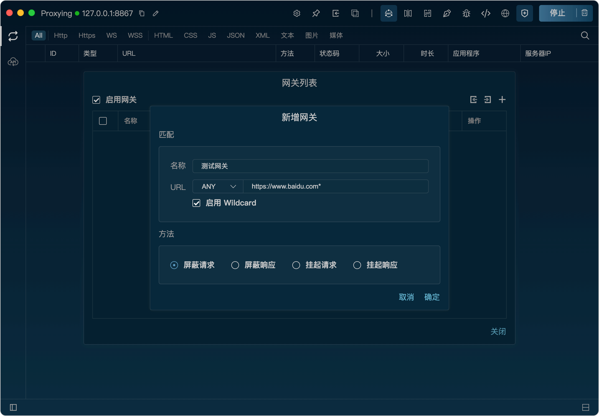
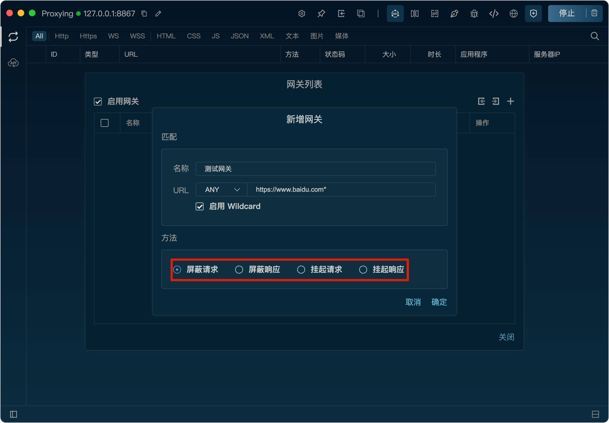

网关
功能
网关功能可以对请求进行屏蔽和挂起，阻止请求发送到服务器，从而实现对某些请求的过滤和控制。
开启网关功能
将鼠标悬浮到网关图标上，点击“启动网关”按钮即可开启网关功能。

开启后，网关图标会高亮显示，表示网关已开启。
新增网关规则
1、将鼠标悬浮到网关图标上，点击“规则管理”按钮打开网关规则列表。

2、在规则列表弹框里，点击“+”按钮，打开新增规则弹窗。
3、在弹窗里，填写匹配规则、屏蔽方式，点击“确定”按钮即可新增规则。匹配规则支持wildcard。

屏蔽方法
网关提供4种屏蔽方法：
屏蔽请求
：直接阻止请求发送到服务器，客户端会收到连接失败的错误。
屏蔽相应
：请求可以发送到服务器，但服务器的响应会被屏蔽，客户端会收到连接失败的错误。
挂起请求
：请求不会发送到服务器，客户端会一直处于等待状态，直到超时。
挂起响应
：请求会发送到服务器，但服务器的响应会被挂起，客户端会一直处于等待状态，直到超时。
